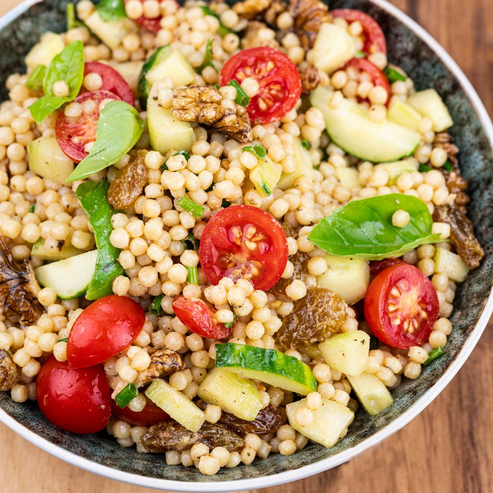

greek couscous salad

Description
This hearty Greek couscous salad uses Israeli couscous. So delicious!
Ingriedents
½ cup pearl (Israeli) couscous
1 cup canned chickpeas (garbanzo beans), rinsed and drained
¼ cup chopped sun-dried tomatoes
¼ cup sliced Kalamata olives
2 tablespoons crumbled feta cheese
1 tablespoon white wine vinegar
1 ½ teaspoons lemon juice
½ teaspoon ground black pepper
Steps
- Pour water and chicken broth into a saucepan; stir in the garlic and bring to a boil. Stir in pearl couscous, cover the pan, and remove from heat.
Allow couscous to stand until water has been absorbed, about 5 minutes; fluff with a fork. Allow couscous to cool to warm temperature.
- Lightly toss couscous, chickpeas, sun-dried tomatoes, olives, and feta cheese in a large serving bowl.
- To make the dressing: Mix white wine vinegar, lemon juice, oregano, and black pepper in a small bowl until well combined. Pour over couscous mixture; toss again to serve.
Main page